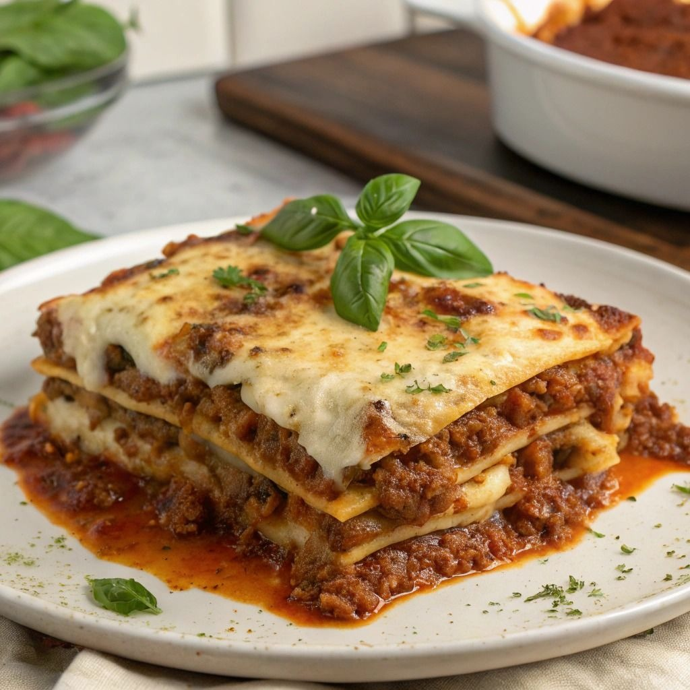

Lasanha à Bolonhesa
Camadas de massa, molho bolonhesa e queijo gratinado, uma refeição completa e deliciosa.

Ingredientes
- 500g de massa para lasanha
- 400g de carne moída
- 1 cebola picada
- 2 dentes de alho picados
- 400g de molho de tomate
- 300g de queijo mussarela fatiado
- Sal, pimenta e azeite a gosto
Modo de Preparo
- Refogue a cebola e o alho no azeite, acrescente a carne moída e cozinhe.
- Adicione o molho de tomate, sal e pimenta, deixe apurar.
- Monte a lasanha alternando camadas de massa, molho e queijo.
- Finalize com queijo por cima e leve ao forno pré-aquecido a 180°C por 30 minutos.
- Sirva quente.
Dica do Chef: Para uma lasanha ainda mais cremosa, adicione molho branco entre as camadas.